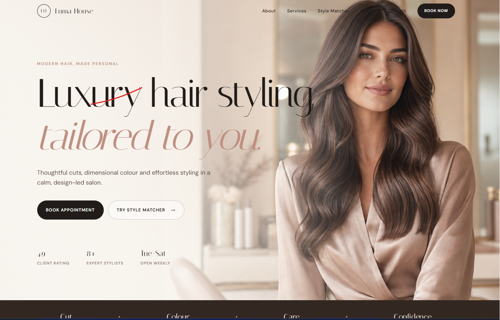

Live project
Luma Hair Studio
A luxury salon website that helps prospective clients understand the brand, explore services, and move confidently towards an appointment.
- User goal
- Find services and reach the booking route quickly.
- Design decision
- A restrained black-and-white palette, generous spacing, and a prominent booking call to action support the premium brand.
- Accessibility focus
- Clear navigation labels, readable text, descriptive images, and keyboard-visible links.
- Testing focus
- Navigation, booking links, image scaling, mobile layout, and colour contrast.